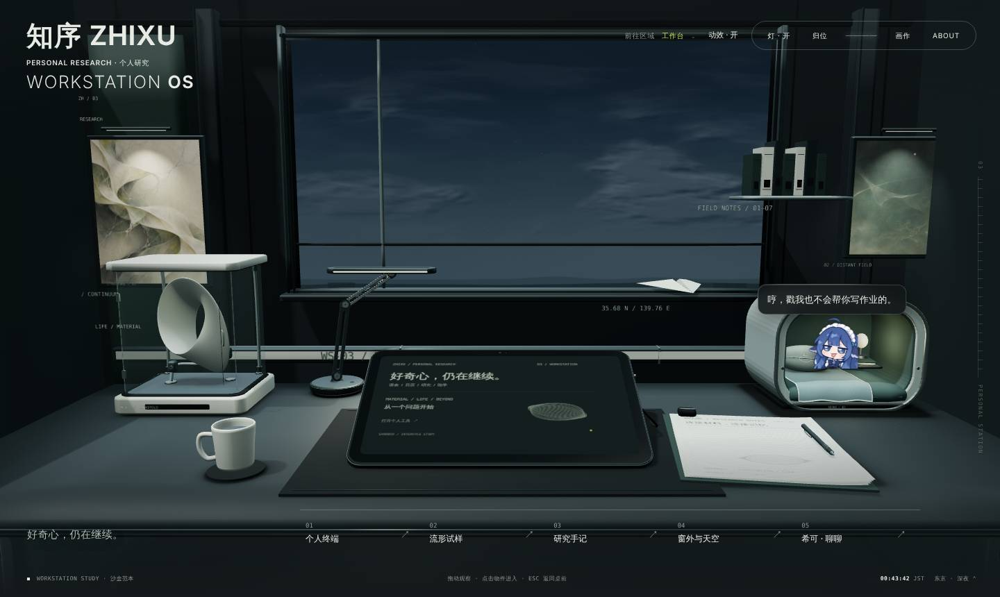

同一世界，
不同的研究现场。
从结构到记忆，再到桌前与天空。
这里保留正在探索的方案与可回看的试验。

03 / WORKSTATION
已完成范本 · v28
研究员工作台
一张桌子、一处材料试样，
一个向天空提问的位置。
- 希可住进来：白天在桌上乱窜，深夜睡进小窝
- 戳一下有吐槽，戳醒她会记仇；摸头还账
- 平板点亮优化与桌旁对话（v26）
- 纸飞机云层与星图加载优化（v28）
继续查看
CURRENT STUDIES / 当前方案


ARCHIVE / 历史与资料